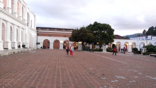
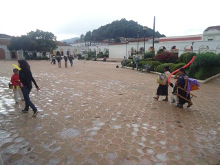
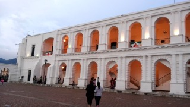
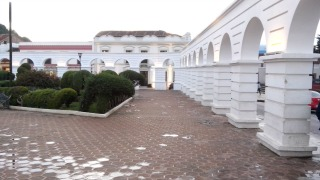
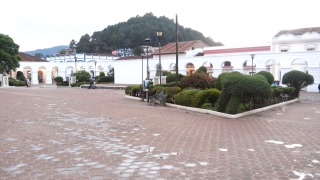

En la parte posterior del Palacio Municipal de San Cristóbal de las Casas, se ubica esta gran Plaza Cívica, conocida como el Parque de los Héroes o Parque de Los Arcos.
Está enmarcada con arquería de medio punto y pesadas columnas de sillares*.
Aquí se llevan a cabo actos cívicos y festividades como la tradicional "Quema de Judas" en Semana Santa y cada lunes del año los empleados del Ayuntamiento, rinden homenaje a la bandera.
*Un sillar es una piedra labrada por varias de sus caras, generalmente en forma de paralelepípedo, y que forma parte de las obras de fábrica.
Se encuentra ubicado entre la avenida Crescencio Rosas entre las calles Guadalupe Victoria y Diego de Mazariegos en el centro de la ciudad.
Si usted se encuentra ubicado el arco del carmen puede caminar 3 cuadras sobre el andador para llegar directamente al parque central, usted verá el palacio municipal camine hacia su izquieda ya que detrás de este se cuentra el parque de los arcos.
En el lugar usted puede realizar actividades como:
* Fotografía
* Asistencia a eventos culturales
* Asistencia a eventos gastronómicos
* Asistencia a festivales de cine
* Asistencia a festivales de música
* Asistencia a festivales de rock
* Asistencia a festivales folklóricos
* Fiesta popular





posicione el mouse sobre las imágenes